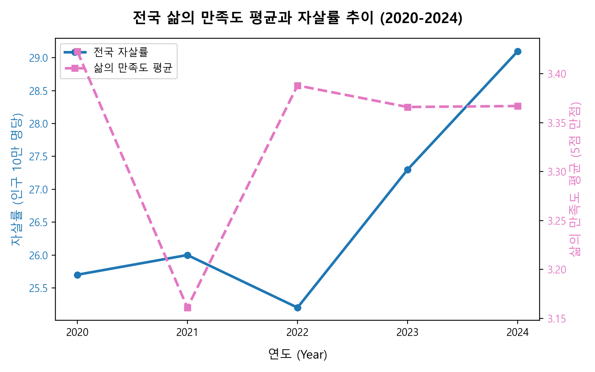
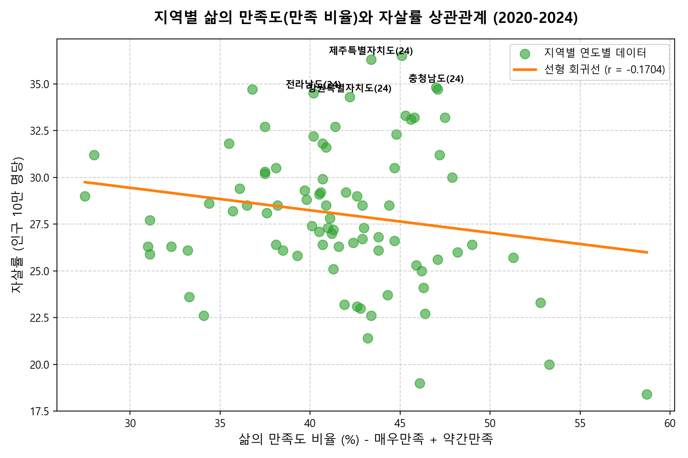
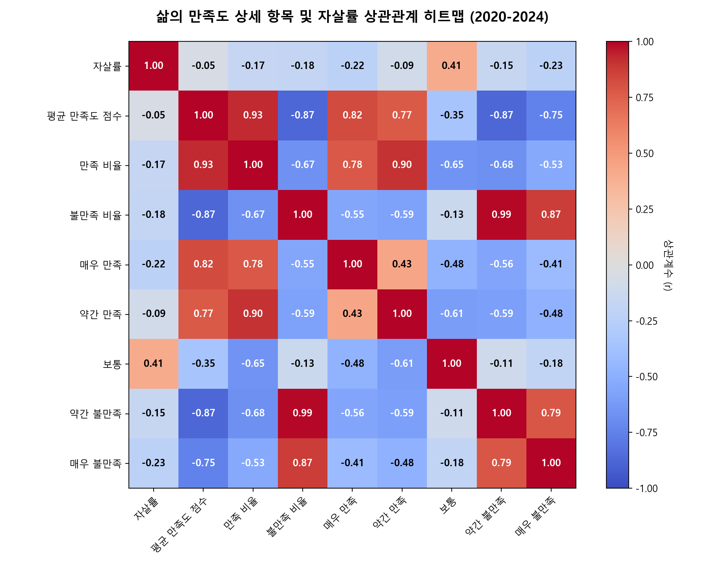
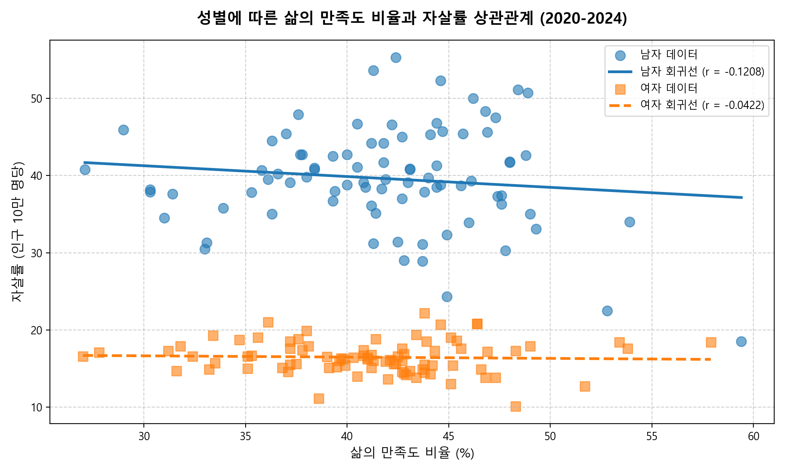
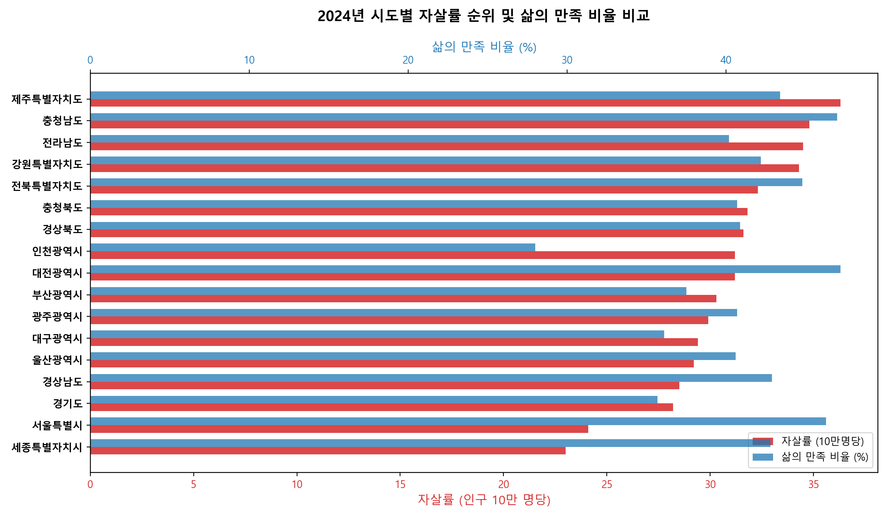
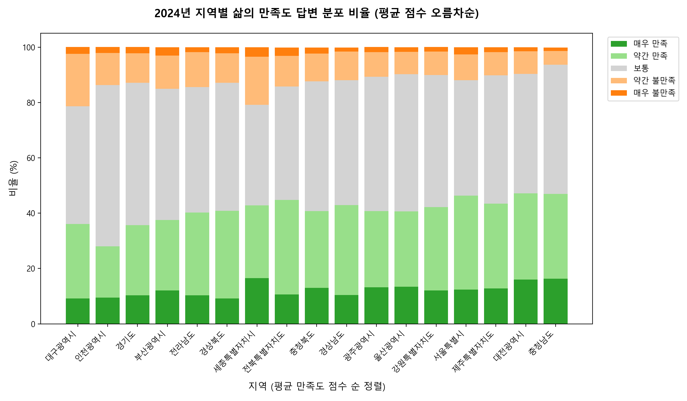

Section 01
요약 (Executive Summary)
국가적 추이의 역설: 2021년 코로나19 팬데믹 절정기 때 만족도는 역대 최저(3.16점)를 보였으나 자살률은 보합세(26.0명)였습니다. 반면, 일상이 정상화된 2024년에는 만족도가 3.37점 수준으로 회복했음에도 실제 자살률은 29.1명으로 최고치를 기록했습니다.
지역 간 약한 음의 상관관계: 5개년 누적 시도 패널 데이터를 분석한 결과, 주관적 만족 비율과 실제 자살률 사이에는 r = -0.1704의 약한 음의 상관관계가 나타납니다.
주관적 통계의 매개(인구 구조적 역설): 불만족 비율이 높은 지역(세종 등)의 자살률이 최저 수준인 반면, 만족도가 높고 불만족도가 최저인 농어촌 고령화 지역(충남 등)의 자살률이 전국 최상위권을 달리는 역설적 연관성(2024년 r = -0.4870)이 포착되었습니다.
남성 자살률의 폭발성: 주관적 체감 만족도는 성별 간 유의미한 차이가 없었지만, 실제 자살률은 남성(41.8명)이 여성(16.6명)보다 2.5배 높게 나타나 남성 위기 집단을 겨냥한 맞춤 안전망이 시급합니다.
Section 02
데이터 개요 및 전처리
원천 데이터 출처: 2020년 ~ 2024년(5개년) 통계청 사회조사 데이터(삶의 만족도) 및 사망원인통계 데이터(자살률)를 결합.
만족/불만족 지표 산출: 설문의 5단계 척도 비율(%)을 가중 계산하여 평균 만족도 점수(5점 만점)와 긍정(매우+약간 만족), 부정(매우+약간 불만족) 비율을 추출.
행정구역 명칭 결합 처리: 전북특별자치도(전라북도), 제주특별자치도(제주도) 등 이종 명칭을 결합 및 매핑하여 18개 표준 코드로 전처리.
전국 평균 분리: 지역 간 순수 상관도를 보기 위해 '전국' 데이터를 별도 분리하여 17개 시도 기반 패널 구축.
| 항목 | 데이터 속성 | 단위 |
|---|---|---|
| 행정구역별(1) | 17개 시도 + 전국 | 텍스트 |
| 연도 (Year) | 2020 ~ 2024 | 연도 |
| 성별 (Gender) | Total / 남자 / 여자 | 범주형 |
| 삶의 만족 비율 | 매우 + 약간 만족 | % |
| 삶의 불만족 비율 | 매우 + 약간 불만족 | % |
| 자살률 | 인구 10만 명당 사망자 | 명 |
Section 03
전국 삶의 만족도 및 자살률 추이
평균 만족 점수
3.423
5.0 만점
만족 비율
42.7%
매우 + 약간
전국 자살률
25.7
10만 명당 명
2020년 팬데믹 1년차: 사회 통제로 만족도 하락이 관찰되었으나 자살률은 보합세(25.7명)를 유지했습니다.

Section 04
지역별 만족 비율과 자살률 상관관계
통합 상관분석: 전체 85개 관측치에서 만족 비율과 자살률은 r = -0.1704의 약한 음의 관계를 보이며, 선형 연관도가 낮게 유지됩니다.
상관 히트맵 인사이트: 만족 수준의 5단계 정밀 히트맵 상 '매우 만족'(r = -0.19) 및 '약간 만족'(r = -0.09)은 보호 기제이나, '약간 불만족'(r = -0.22)도 강한 음의 상관성을 보입니다.
연도별 극적인 패턴 변화:
2020년에는 만족 비율과 자살률이 r = -0.5226으로 상식적인 강한 음의 관계를 보였으나, 2024년에는 불만족 비율과 자살률이 r = -0.4870으로 강한 음의 상관성을 보이며 데이터가 역전되었습니다. (차트를 클릭하면 대화면으로 확대됩니다.)


Section 05
체감 만족도와 실제 자살률의 성별 격차
전체 (Total, 2024년 기준)
삶의 만족 비율
40.1%
자살률 (10만명당)
29.1명
주관적인 삶의 만족도는 남녀 모두 39~40%선으로 동등하게 느끼지만, 실제 극단적 선택률은 남성이 41.8명으로 여성(16.6명)의 2.5배에 달하는 대격차를 보여줍니다.

Section 06
2024년 지역별 만족도와 자살률 역설
고불만족 · 저자살
세종특별자치시
불만족 비율
20.8%
자살률 (순위)
23.0명 (17위)
전국 최고 수준의 주관적 불만족(20.8%)을 호소하나 자살률은 전국 최저입니다. 젊은 신도시 특유의 적극적 불만 표출과 낮은 노령화 지수(인구 구조)가 만든 통계적 왜곡입니다.
저불만족 · 고자살
충청남도
불만족 비율
6.2%
자살률 (순위)
34.8명 (2위)
불만족도가 전국 최저(6.2%)로 매우 안정되어 보이나 자살률은 전국 2위(34.8명)입니다. 고령층의 방어적 설문 성향과 숨겨진 노인 자살 빈곤 취약성이 빚은 역설입니다.
저불만족 · 고자살
제주특별자치도
불만족 비율
10.2%
자살률 (순위)
36.3명 (1위)
설문 조사 만족도는 보통 이상(불만족 10.2%)으로 높으나 자살률은 전국 1위(36.3명)에 올랐습니다. 도서 지역의 물리적 격리 및 고령 취약 노인 고독사의 영향이 큽니다.


Section 07
결론 및 정책적 시사점
주관적 설문 지표의 한계 인정: 주관적인 만족도 수치에 안주하여 자살률 고위험군을 판단해서는 안 됩니다. 방어적인 응답 경향(충남 6.2% 등) 이면에 숨겨진 연고 없는 고령층을 사전에 발굴하는 밀착 스크리닝이 필수적입니다.
인구 구조 맞춤형 이원 정책(Two-Track):
고령 인구 비율이 높은 지역(충남, 전남, 강원, 제주)에는 노인 고독사 예방 돌봄, 농약 보관함 보급, 방문 간호 네트워크 확충에 예산을 집중 투입해야 합니다. 반면 젊은 도시(세종 등)에는 정주여건 개선, 직장인 스트레스 완화, 청년 심리 상담 지원에 역점을 두어야 합니다.
남성 특화 긴급 안전 시스템 마련: 삶의 만족도와 무관하게 자살률 사망 통계가 압도적으로 높은 남성 위기자 예방을 위해, 단순 심리 치유를 넘어 실직/파산 시의 생계비 긴급 매칭, 은퇴 이후 관계 고립을 해소하는 전용 커뮤니티 등의 사회경제적 안전망 보강이 필요합니다.